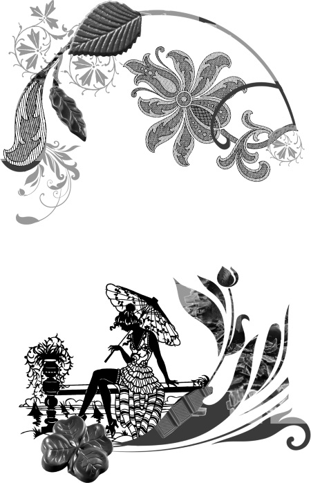

Немного о шоколаде и его не совсем обычном применении .. Заключение . .

Наше знакомство с какао и шоколадом завершается. Основной задачей этой книги было рассказать вам о неожиданном и непривычном использовании шоколада. Оказывается, что любимое с детства лакомство и знакомый каждому напиток могут быть хорошим подспорьем в борьбе с лишним весом, плохим настроением, проблемами с кожей. Совсем недавно люди научились использовать этот продукт в качестве важного ингредиента в косметических средствах и даже в макияже. Мы постарались показать все возможные стороны применения шоколада в современной косметологии. В последней главе познакомили с простым и доступным способом сбросить лишние килограммы.
На примере шоколада вы убедились, как натуральные и всем известные продукты под влиянием новых открытий вновь входят в нашу жизнь, но уже в другом статусе. Еще, казалось бы, недавно вся Европа восхищалась экзотическим ароматным и малодоступным напитком индейских жрецов, а ныне обычное дело – покупка шоколадного батончика в ближайшем магазинчике. И вот мы с удивлением узнаем, что шоколад вводят в программу снижения веса, а косметика на основе какао-бобов омолаживает и оздоравливает нашу кожу.
В одной из книг о шоколаде авторы приводят пример, как одна почитательница темного шоколада съедала его ежедневно не менее 100 граммов, постоянно покупая его впрок. Дома она не просто ела шоколад в виде плиток, а дополнительно готовила напиток какао на цельном молоке средней жирности.
Употребляя ежедневно большое количество шоколада, оставалась тем не менее стройной и привлекательной женщиной. Сейчас ей уже 45 лет, но она осталась все той же стройной женщиной (при росте 1,69 метра она весит 60 килограммов), любительницей шоколада и горячего какао вечером. Просто она следила за своим весом, правильно питалась, особо не отказывая себе, а шоколад лишь хорошо дополнял ее образ жизни. Да, она не употребляла сахар, заменяя его шоколадом. Шоколад не просто доставлял ей удовольствие, он обеспечивал организм женщины всем необходимым, усиливал чувство насыщения и не позволял ей переедать. Упомянутая женщина занималась спортом – бегала, плавала, ездила на велосипеде и играла в хоккей. Она составила себе индивидуальную программу по фитнесу и тратила на это несколько часов в неделю.
Хорошее самочувствие, прекрасная внешность и отличная работоспособность целиком зависят от нас. Все мы разные, со своими привычками, особенностями организма и интеллекта. Но есть то, что объединяет всех нас, – шоколад.
Тот или иной продукт из какао-бобов не только лежит на обеденном столе в абсолютном большинстве кухонь нашей страны, да и всего мира, но и стоит в ванной комнате, на том месте, где мы обычно держим шампуни и бальзамы. На ночном столике у многих легко обнаружить небольшую баночку с характерным запахом – это ночной крем для лица. Рядом баночка поменьше – защитный крем для губ.
Нас окружает большой шоколадный мир, он проникает в нашу жизнь, меняет ее, и уже скоро мы не представим себе утро без горячего шоколада, а шоколадное обертывание станет в еженедельном распорядке обязательной процедурой. Шоколадная косметика и шоколадная диета становятся естественной и неотъемлемой составляющей нашего образа жизни.
На этом книга подходит к концу, а мне остается пожелать вам только одного: пусть у вас все будет в шоколаде! Ведь не зря эта фраза давно стала символом удачи и благополучия.
